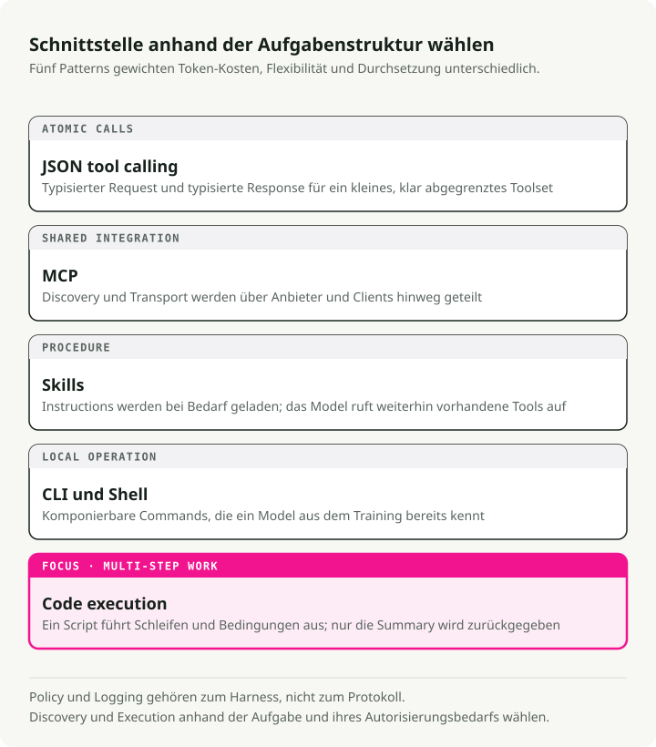
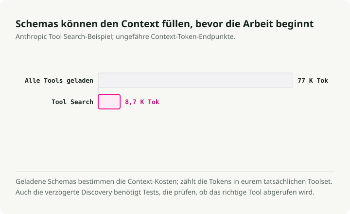
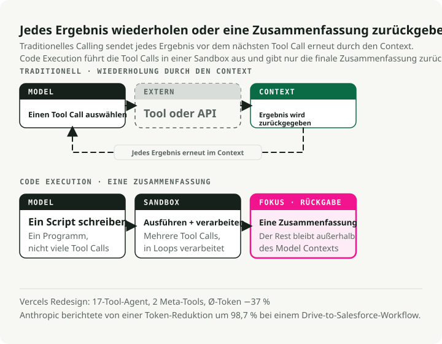
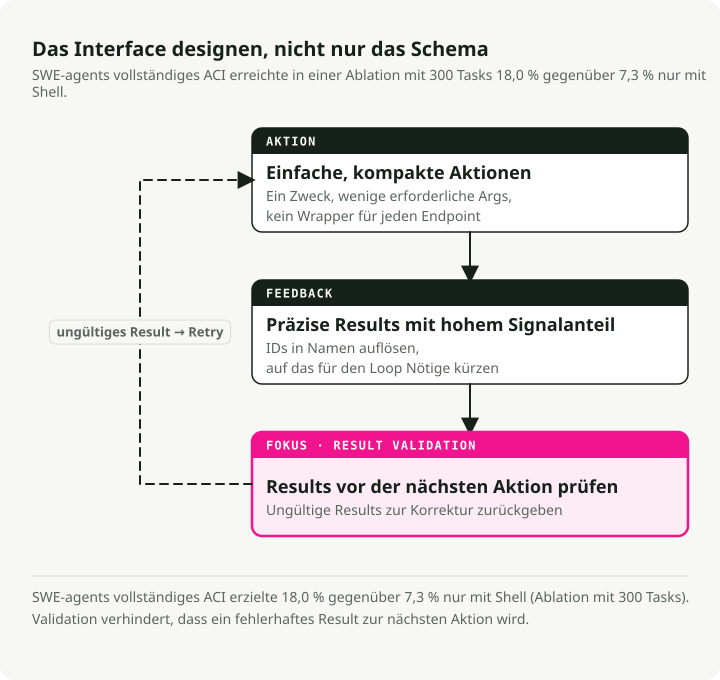

Automatische Übersetzung
Dieser Artikel wurde automatisch aus der englischen Originalversion übersetzt.
Tool-Nutzung für AI Agents im Jahr 2026: MCP, CLI, Skills und Code-Ausführung
Teil 3 der Serie „Engineering the Agentic Stack“
Teil 1 behandelte Reasoning Loops, Teil 2 behandelte Memory. In diesem Beitrag geht es um Tool-Nutzung für AI Agents: wie Agents mit der Welt interagieren und warum Tool-Design wichtiger ist, als die meisten Teams glauben.
Die Tooling-Landschaft hat sich 2025–2026 verändert. MCP wurde zum De-facto-Standard für externe Services, aber Produktionsteams stoßen immer wieder auf Sicherheitslücken und Token-Overhead. Der andere Ansatz, der an Verbreitung gewinnt, sind Agents, die Code schreiben und ausführen, statt JSON-definierte Tools aufzurufen. Anthropic maß dabei eine Token-Reduktion von 98,7 % in einem repräsentativen Workflow, und das CodeAct-Paper berichtet von 20 % höheren Task-Success-Raten.
Dieser Beitrag vergleicht JSON-Tool-Calling, MCP, Skills, CLI-Tools und Code-Ausführung und ordnet sie anschließend den Prinzipien des Agent-Computer Interface (ACI) zu, die ich im Market Analyst Agent anwende.
TL;DR: Es gibt fünf Modalitäten, mit denen AI Agents Tools nutzen, und jede hat ihren Sweet Spot. Der praktische Stack für 2026: Skills für Expertise, CLI als Default, MCP für externe Services, Code-Ausführung für mehrstufige Orchestrierung. ACI-Designprinzipien aus SWE-agent gelten für alle davon.
Fünf Arten, wie AI Agents Tools nutzen
In Teil 1 habe ich gezeigt, wie AI-Agent-Reasoning-Loops entscheiden, wie gedacht wird. Tool-Modalitäten entscheiden, wie gehandelt wird. Inzwischen gibt es fünf klar unterscheidbare Ansätze, jeweils mit eigenen Trade-offs bei Token-Kosten, Flexibilität und Sicherheit.

1. JSON Tool Calling — Die Basis
Das ursprüngliche Muster: Du definierst Tool-Schemas als JSON, das LLM emittiert strukturierte Function Calls, und dein Code führt sie aus. Der Ansatz ist gut verstanden und funktioniert für kleine Toolsets problemlos.
# Traditional tool definition — each tool consumes ~550-1,400 tokens (Apideck benchmark)
tools = [
{
"name": "get_stock_price",
"description": "Get the current stock price for a ticker symbol",
"input_schema": {
"type": "object",
"properties": {
"ticker": {"type": "string", "description": "Stock ticker (e.g., NVDA)"}
},
"required": ["ticker"]
}
}
]
Mit 5–10 Tools ist das völlig in Ordnung. Das Problem ist die Skalierung: Jede Tool-Definition kostet 550–1.400 Tokens. Bei 20 Tools gibst du 15–25K Tokens aus, bevor der Agent überhaupt mit dem Reasoning beginnt.
2. MCP — Der universelle Standard (mit Einschränkungen)
Das Model Context Protocol ist der Standard, auf den sich die meisten Anbieter geeinigt haben. Anthropic übergab ihn im Dezember 2025 unter der Agentic AI Foundation (AAIF) an die Linux Foundation, gemeinsam gegründet mit OpenAI und Block und unterstützt von Google, Microsoft und AWS als Platinum Members. OpenAI ergänzte MCP-Support in seiner Responses API. Inzwischen gibt es 10.000+ aktive MCP-Server und 97M+ monatliche SDK-Downloads.
Wo MCP gewinnt: SaaS-Integration über Anbietergrenzen hinweg (Figma, Notion, Salesforce), Enterprise-Governance mit Audit Trails, Services ohne CLI-Äquivalent und Umgebungen, die OAuth-Orchestrierung benötigen. Für diese Use Cases ist MCP die klare Wahl.
In der Produktion ist das Bild aber unübersichtlicher, als es die Zahlen vermuten lassen.
Die Sicherheitsoberfläche ist das erste Problem. Das Vulnerable MCP Project verfolgt 50 Schwachstellen in MCP-Servern, davon 13 als Critical eingestuft, eingebracht von 32 Sicherheitsforschern. Die Angriffsklassen reichen von Prompt Injection über Input-Validation-Fehler und Authentifizierungsprobleme bis hin zu Netzwerksicherheitslücken. Der erste reale bösartige MCP-Server tauchte im September 2025 auf: ein Paket namens postmark-mcp, das jede ausgehende E-Mail per BCC an die Adresse eines Angreifers sendete und schätzungsweise 300–500 Organisationen betraf, bevor es entdeckt wurde.
Tool Poisoning ist die Angriffsklasse, die mir am meisten Sorgen macht. Invariant Labs zeigte, dass kompromittierte MCP-Tools Daten exfiltrieren können, selbst wenn sie nie aufgerufen werden. Es reicht schon, wenn das Modell nur die Metadaten des Tools liest. MCPTox-Benchmarks, die 20 LLM-Agents gegen 45 reale MCP-Server testeten, fanden Angriffserfolgsraten von bis zu 72,8 %.
Token-Overhead ist das operative Problem. Ein Team, das MCP-Server für GitHub, Slack und Sentry betrieb (~40 Tools insgesamt), stellte fest, dass 55.000 Tokens an Schema-Definitionen injiziert wurden, bevor ein User überhaupt etwas fragt. Ein anderes berichtete, dass 143.000 von 200.000 verfügbaren Tokens (72 %) allein durch Tool-Definitionen verbraucht wurden.

Die Gegenmaßnahmen funktionieren, bestätigen aber das zugrunde liegende Problem. Anthropics Tool Search Tool reduziert Schema-Overhead um 85 %. Dynamisches Tool-Loading (3–5 relevante Tools pro Task) erreicht 96 % Reduktion. Das sind Workarounds für ein Protokoll, das nicht mit Blick auf Token-Budgets entworfen wurde.
3. Skills (SKILL.md) — Expertise, nicht Ausführung
Ende 2025 kam die Standardisierung von Agent Skills als offenes Format (Launch im Oktober 2025, Veröffentlichung als Open Standard im Dezember 2025). Die Unterscheidung ist wichtig: Tools liefern Fähigkeiten (was Agents tun können), Skills liefern Expertise (was Agents darüber wissen, wie komplexe Aufgaben zu lösen sind).
Der Standard SKILL.md definiert einen Skill als Markdown-Datei mit YAML-Frontmatter:
---
name: deploy
description: Deploy the application to production
argument-hint: "[environment]"
user-invocable: true
---
Deploy the application to the $0 environment (default: staging).
Steps:
1. Run the test suite
2. Build the production bundle
3. Deploy using the deploy script
4. Verify the deployment health check
Skills verwenden progressive disclosure: Beim Start werden nur die Metadaten geladen (~100 Tokens für das YAML-Frontmatter), die vollständigen Instruktionen erst bei Aktivierung des Skills. Vergleiche das mit MCP, wo ~40 Tools typischer Services schon ~55.000 Tokens verbrauchen, bevor irgendein Reasoning beginnt. Die plattformübergreifende Verbreitung bis März 2026 umfasst Claude Code, OpenAI Codex CLI, Cursor, GitHub Copilot, Gemini CLI, Goose, Windsurf und Roo Code – ein Trend, den Victor Dibia untersucht hat in seiner Analyse der Verschiebung von Tools zurück zu codegetriebenen Agent-Aktionen.
Wann Skills gewinnen: Transfer von Domänenwissen, komplexe mehrstufige Prozeduren, wiederkehrende Workflows wie Datenbankmigrationen oder Payment-Integrationen und jede Aufgabe, bei der der Agent wissen muss, wie etwas geht, statt nur was zu tun ist.
4. CLI/Bash — Die Unix-Renaissance
Das Unix-Terminal hat sich als die tokeneffizienteste Agent-Schnittstelle erwiesen. Die Rechnung ist eindeutig: Ein CLI-Tool-Manifest kostet etwa 100 Tokens, während die äquivalenten MCP-Server-Schemas 50.000+ Tokens verbrauchen. Das ist ein 4–32x-Unterschied, gemessen von Scalekit über 75 Benchmark-Läufe hinweg (32x bei Aufgaben wie Repo-Sprache und Lizenzsuche).
Modelle sind native CLI-Sprecher. Ihre Trainingsdaten enthalten Milliarden Terminal-Interaktionen aus Stack Overflow, GitHub-Repositories und Dokumentation. Sie verstehen git, docker, kubectl, gh, curl und jq ohne jegliche Schema-Definitionen.
Ugo Enyiohas Leitfaden „Writing CLI Tools That AI Agents Actually Want to Use“ formuliert acht Designregeln:
- Strukturierte Ausgabe ist Pflicht — unterstütze
--json - Exit-Codes sind Control Flow — nutze unterschiedliche Codes für verschiedene Fehlertypen
- Commands sollten idempotent sein
- Selbstdokumentierend
--helpmit realistischen Beispielen - Für Composability entwerfen —
--quietfür nackte Werte, stdin-Support - Stelle
--dry-run- und--yes-Flags bereit - Version Introspection unterstützen
- Auth über Environment Variables handhaben
Die Trade-offs sind real. CLI hat nicht die Type Safety, integrierte OAuth-Orchestrierung, Tool Discovery und Audit Trails von MCP. Das Muster, auf das sich die meisten Teams aus meiner Sicht einigen: CLI als Default für Entwicklung und lokale Operationen, MCP für die Integration externer Services und Enterprise-Governance.
5. Code-Ausführung — Der große Wandel
Das ist die Veränderung im Agent-Tooling, die ich für am folgenreichsten halte. Statt dass das LLM strukturiertes JSON emittiert, um vordefinierte Funktionen einzeln aufzurufen, schreibt der Agent ein vollständiges Python- oder bash-Skript, das mehrere Tools aufruft, Ergebnisse mit Loops und Conditionals verarbeitet und nur finale Zusammenfassungen in den Modellkontext zurückgibt.
Anthropic hat das mit Programmatic Tool Calling (PTC) formalisiert, inzwischen GA in der Claude API. Die akademische Grundlage ist das CodeAct-Paper (Wang et al., ICML 2024), das Tests über 17 LLMs hinweg durchführte und zeigte, dass Code-Aktionen bis zu 20 % höhere Task-Success-Raten und 30 % weniger Schritte als JSON-Alternativen erreichen.

Die Evidenz aus der Produktion:
-
Vercel baute seinen d0-Text-to-SQL-Agent neu, indem 80 % der Tools entfernt wurden (von 15 auf 2:
ExecuteCommandundExecuteSQL). Die Task-Success stieg von 80 % auf 100 %, die Ausführungszeit sank um den Faktor 3,5 und die Token-Nutzung fiel um 40 %. Ihre Formulierung: „The best agents might be the ones with the fewest tools.“ -
Cloudflare entwickelte „Code Mode“, womit Agents TypeScript schreiben, um ihre API aufzurufen, statt Tool-Schemas zu definieren, was den Context-Overhead reduziert. Ihre Begründung: „LLMs have an enormous amount of real-world TypeScript in their training set, but only a small set of contrived examples of tool calls.“
Hier ist das Muster aus Anthropics PTC-Dokumentation. Traditionelles Tool Calling für Ausgabenanalysen erfordert 20+ separate Inference-Pässe, einen pro Teammitglied, wobei alle Zwischendaten durch den Kontext fließen. Ein Workflow mit ~150.000 Tokens bei direktem Tool Calling wurde für ~2.000 Tokens neu implementiert, eine Reduktion von 98,7 %. Mit Code-Ausführung schreibt der Agent ein einziges Skript:
# Agent generates this code, executes in sandbox
import json
members = get_team_members("engineering")
over_budget = []
for m in members:
expenses = get_expenses(m["id"], "Q3")
total = sum(e["amount"] for e in expenses)
if total > 5000:
custom = get_custom_budget(m["id"])
limit = custom["limit"] if custom else 5000
if total > limit:
over_budget.append({"name": m["name"], "spent": total, "limit": limit})
# Only this final summary returns to the LLM context
print(json.dumps(over_budget))
Das LLM sieht nur die finale JSON-Zusammenfassung, nicht die Tausenden Expense Line Items, die in der Sandbox verarbeitet wurden. Token-Effizienz, native Composability (Loops und Conditionals gibt es gratis), echtes Error Handling (try/except statt natürlichsprachlichem Reasoning über Fehler) und Privacy (sensible Daten bleiben in der Sandbox) verbessern sich gleichzeitig.
Wann JSON Tool Calling weiterhin sinnvoll ist: einzelne atomare Operationen, Umgebungen ohne Sandboxing-Infrastruktur, kleinere Modelle mit schwacher Code-Generierung oder Audit-Anforderungen, bei denen jeder einzelne Tool-Aufruf protokolliert werden muss.
Vergleichstabelle für Tool Calling bei AI Agents
| Dimension | JSON Tool Calling | MCP | Skills (SKILL.md) | CLI/Bash | Code-Ausführung (PTC) |
|---|---|---|---|---|---|
| Am besten für | Einfache Einzelaktionen | SaaS über Anbietergrenzen | Domänenexpertise | Dev-Workflows, lokale Ops | Mehrstufige Orchestrierung |
| Token-Overhead | Mittel (Schemas pro Request) | Sehr hoch (550–1.400/Tool) | Sehr niedrig (~100 Tokens) | Nahe null | Niedrig (2 Meta-Tools) |
| Task-Success-Rate | Baseline | Ähnlich zur Baseline | N/A (Expertise-Layer) | Höher bei CLI-nativen Tasks | +20 % vs. Baseline |
| Composability | Niedrig (sequenziell) | Niedrig (sequenziell) | Hoch (prozedurales Wissen) | Hoch (Pipes, Chaining) | Sehr hoch (nativer Code) |
| Sicherheitsoberfläche | Mittel | Hoch (50+ CVEs) | Niedrig (promptbasiert) | Hoch (Shell-Zugriff) | Hoch (benötigt Sandboxing) |
| Setup-Komplexität | Niedrig | Mittel (Server-Deployment) | Sehr niedrig (Markdown) | Sehr niedrig (bestehende CLIs) | Mittel (Sandbox-Infrastruktur) |
| Latenz pro Aktion | 1 Inference/Call | 1 Inference + Transport | 0 (Context Injection) | 1 Inference/Call | 1 Pass für N Calls |
| Debugging | Gut (strukturiertes I/O) | Mittel (Transport-Layer) | Gut (lesbares Markdown) | Exzellent (sichtbar) | Gut (lesbarer Code) |
Composability bedeutet hier, wie leicht sich mehrere Operationen zu einem größeren Workflow verketten lassen. Niedrig heißt: Jeder Tool-Aufruf benötigt einen separaten LLM-Round-Trip; hoch heißt: Die Modalität unterstützt das Verketten von Ergebnissen nativ (Unix-Pipes, Code-Variablen, prozedurale Schritte).
Das Agent-Computer Interface (ACI) für AI-Agent-Tools
Der Begriff „Agent-Computer Interface“ (ACI) wurde von John Yang, Carlos E. Jimenez und Kollegen aus Princeton in ihrem SWE-agent-Paper (NeurIPS 2024) geprägt. Die Idee ist einfach: So wie Menschen von gut gestalteten Interfaces profitieren (HCI), sind LM-Agents „a new category of end users with their own needs and abilities, and would benefit from specially-built interfaces.“
Die Ablation Results haben das bestätigt. SWE-agent mit vollständigem ACI erreichte 18,0 % auf SWE-bench Lite gegenüber 7,3 % mit nur einer Standard-Linux-Shell – eine Verbesserung um 10,7 Prozentpunkte allein durch Interface-Design. Das Linting-Guardrail allein machte davon 3 Prozentpunkte aus: 51,7 % der Agent-Edits hatten mindestens einen Fehler, der vom Linter abgefangen wurde, bevor er sich ausbreiten konnte.

Anthropic übernahm ACI als grundlegendes Konzept in seinem Leitfaden „Building Effective Agents“ und führt es als eines von drei Kernprinzipien auf: „Carefully craft your agent-computer interface through thorough tool documentation and testing.“ Ihre praktische Empfehlung: „One rule of thumb is to think about how much effort goes into human-computer interfaces, and plan to invest just as much effort in creating good agent-computer interfaces.“
Die vier Prinzipien in der Praxis
1. Aktionen sollten einfach und leicht verständlich sein. Der häufigste Fehler ist, API-Endpoints eins zu eins zu wrappen. Statt list_users, list_events, create_event zu bauen, implementiere schedule_event, das Verfügbarkeit findet und in einem Call terminiert. Statt read_logs implementiere search_logs, das nur die relevanten Zeilen mit Kontext zurückgibt.
2. Aktionen sollten kompakt und effizient sein. Fasse wichtige Operationen in möglichst wenige Aktionen zusammen. Im Market Analyst Agent kombiniere ich Preisabruf mit grundlegenden Metriken in einem einzigen Tool get_stock_snapshot, statt getrennte Calls für Preis, Volumen, Marktkapitalisierung und KGV zu verlangen.
3. Environment-Feedback sollte informativ, aber knapp sein. Gib kein rohes HTML und keine vollständigen API-Payloads zurück. Löse kryptische IDs in semantische Namen auf. Anthropics Tests zeigten, dass das Hinzufügen eines response_format-Enums, mit dem Agents knappe (~72 Tokens) oder detaillierte (~206 Tokens) Antworten anfordern können (ein 3x-Unterschied bei den Token-Kosten), die Performance in der Praxis spürbar verbessert hat.
4. Guardrails sollten Fehlerfortpflanzung begrenzen. Automatische Fehlererkennung hilft Agents, Fehler schnell zu erkennen und zu korrigieren. In SWE-agent lehnt ein benutzerdefinierter File Editor mit integriertem Linting Syntaxfehler automatisch ab und fängt so 51,7 % der Agent-Edit-Fehler ab, bevor sie sich aufaddieren konnten. Ich wende dasselbe Prinzip im Market Analyst Agent an, indem ich Tool-Argumente vor der Ausführung mit Pydantic-Schemas validiere:
from pydantic import BaseModel, Field, field_validator
class StockQuery(BaseModel):
"""Validated input for stock queries.
Pydantic catches malformed tickers before the API call,
preventing error propagation through the reasoning loop.
"""
ticker: str = Field(description="Stock ticker symbol (e.g., NVDA)")
period: str = Field(default="1mo", description="Time period: 1d, 5d, 1mo, 3mo, 1y")
@field_validator("ticker")
@classmethod
def validate_ticker(cls, v: str) -> str:
v = v.upper().strip()
if not v.isalpha() or len(v) > 5:
raise ValueError(f"Invalid ticker format: {v}")
return v
@field_validator("period")
@classmethod
def validate_period(cls, v: str) -> str:
valid = {"1d", "5d", "1mo", "3mo", "6mo", "1y", "5y"}
if v not in valid:
raise ValueError(f"Invalid period: {v}. Must be one of {valid}")
return v
Design-Patterns für AI-Agent-Tools, die funktionieren
Anthropics Leitfaden „Writing effective tools for agents“ beschreibt Tools als „a new kind of software reflecting a contract between deterministic systems and non-deterministic agents.“ Hier sind die Muster, die sich aus Produktionserfahrung herauskristallisiert haben.
Tool-Beschreibungen als Prompt Engineering behandeln
Beschreibungen sollten mindestens 3–4+ Sätze umfassen und erklären, wann das Tool zu verwenden ist, welche Parameter erforderlich oder optional sind, welches Ausgabeformat zu erwarten ist und welche Edge Cases relevant sind. Namespacing mit Präfixen (asana_search, jira_search) hat „non-trivial effects“ auf die Genauigkeit der Tool-Auswahl. In Anthropics Experimenten waren für Claude optimierte Tool-Beschreibungen auf Evaluations-Benchmarks besser als von Experten verfasste.
# Bad: vague, no context for when to use
tools = [{
"name": "search",
"description": "Search for items",
}]
# Good: specific, with input examples and edge cases
tools = [{
"name": "stock_search_news",
"description": (
"Search for recent news articles about a specific stock or company. "
"Use this tool when the user asks about recent events, earnings, "
"announcements, or market-moving news for a specific ticker. "
"Returns up to 10 articles sorted by relevance. "
"For broad market news (not ticker-specific), use market_overview instead."
),
"input_schema": {
"type": "object",
"properties": {
"query": {
"type": "string",
"description": "Search query. Examples: 'NVDA earnings Q3 2025', 'Tesla delivery numbers'"
},
"max_results": {
"type": "integer",
"description": "Max articles to return (1-10, default 5)",
"default": 5
}
},
"required": ["query"]
}
}]
Interne Tests zeigten, dass Input-Beispiele (Feld input_examples) die Genauigkeit bei komplexem Parameter-Handling deutlich erhöhten.
High-Signal, maschinenlesbare Ausgabe zurückgeben
Vermeide Low-Level-Identifier (uuid, mime_type). Löse kryptische IDs in semantische Namen auf. Strukturiere die Antwort so, dass der Agent ohne Parsing von Boilerplate darüber reasonen kann:
# Bad: raw API response dumped to agent
def get_stock_price(ticker: str) -> dict:
response = api.get(f"/v1/quotes/{ticker}")
return response.json() # 500+ tokens of nested JSON
# Good: high-signal summary the agent can immediately reason about
def get_stock_price(ticker: str) -> dict:
data = api.get(f"/v1/quotes/{ticker}").json()
return {
"ticker": ticker,
"price": data["regularMarketPrice"],
"change_pct": round(data["regularMarketChangePercent"], 2),
"volume": data["regularMarketVolume"],
"market_cap_b": round(data["marketCap"] / 1e9, 1),
"pe_ratio": data.get("trailingPE"),
"summary": f"{ticker} at ${data['regularMarketPrice']:.2f} "
f"({'up' if data['regularMarketChangePercent'] > 0 else 'down'} "
f"{abs(data['regularMarketChangePercent']):.1f}%)"
}
Error Handling auf Resilienz auslegen
Das Muster, das sich in der Produktion bewährt hat, besteht aus vier Schichten Fault Tolerance:
- Retries mit Exponential Backoff für transiente Fehler
- Model-Fallback-Ketten bei Provider-Ausfällen
- Routing nach Fehlerklassifikation — transiente Fehler werden wiederholt, vom LLM behebbarer Fehler geht mit Kontext zurück an den Agent, menschlich zu behandelnde Fehler werden eskaliert
- Checkpoint-Recovery für Crash-Überleben
Teams berichten, dass unrecoverable failures mit diesem Vier-Schichten-Ansatz von 23 % auf unter 2 % gesunken sind, wie in Anthropics Resilience-Patterns für Tools dokumentiert.
from tenacity import retry, stop_after_attempt, wait_exponential
@retry(
stop=stop_after_attempt(3),
wait=wait_exponential(multiplier=1, min=2, max=10),
)
def call_stock_api(ticker: str) -> dict:
"""Fetch stock data with automatic retry on transient failures.
Layer 1: Exponential backoff handles rate limits and network blips.
If all retries fail, the error propagates to the agent with
enough context to decide whether to try a different approach.
"""
response = httpx.get(
f"https://api.example.com/v1/quotes/{ticker}",
timeout=10.0,
)
response.raise_for_status()
return response.json()
Anwendung dieser Patterns: der Market Analyst Agent
Ich zeige, wie diese Prinzipien im Market Analyst Agent aus Teil 1 zusammenkommen.
Tool-Konsolidierung
Der Artikel aus Teil 1 zeigt die vereinfachte Oberfläche mit 5 Tools nach diesem Refactoring. Vor diesem Cleanup hatte das ursprüngliche Design 10+ Tools: get_stock_price, get_company_metrics, get_market_cap, get_pe_ratio, get_volume und so weiter. Jedes davon war ein dünner Wrapper um genau einen API-Endpoint. Der Agent musste bei jeder Anfrage entscheiden, welche Kombination davon aufzurufen ist.
Ich habe diese in 5 High-Level-Tools konsolidiert und dabei dem ACI-Prinzip kompakter, effizienter Aktionen gefolgt:
| Vorher (10+ Tools) | Nachher (5 Tools) | Warum |
|---|---|---|
get_stock_price + get_company_metrics + get_pe_ratio |
get_stock_snapshot |
Ein einzelner Call liefert alles für die Basisanalyse |
get_price_history + get_volume_history |
get_price_history |
Kombiniert mit konfigurierbarer Periode und Indikatoren |
search_news + search_press_releases |
search_news |
Vereinheitlichte Suche mit Quellenfilterung |
search_competitors + get_sector_data |
search_competitors |
Gibt Wettbewerber mit relativen Metriken zurück |
get_financials + get_balance_sheet + get_cash_flow |
get_financials |
Vereinheitlicht mit Parameter statement_type |
Dadurch sank der Schema-Overhead der Tools deutlich, und die Tool-Auswahl des Agents wurde zuverlässiger, weil es weniger mehrdeutige Optionen gibt.
Strukturierte Outputs für Tool-Ergebnisse
Jedes Tool im Market Analyst Agent liefert eine Pydantic-validierte Antwort zurück. Das wendet das ACI-Guardrails-Prinzip an der Tool-Grenze an:
class StockSnapshot(BaseModel):
"""Structured tool response — the agent never sees raw API noise."""
ticker: str
price: float
change_pct: float
volume: int
market_cap_b: float
pe_ratio: float | None
summary: str # Human-readable one-liner for direct use in reports
class NewsResult(BaseModel):
"""Each news item is pre-processed for agent consumption."""
headline: str
source: str
date: str
relevance_score: float # Pre-ranked so the agent doesn't waste tokens sorting
key_points: list[str] # Extracted by the tool, not the agent
Das Feld summary ist das wichtigste. Es gibt dem Agent einen direkt nutzbaren String, der ohne weitere Verarbeitung in einen Report übernommen werden kann. Die key_points in NewsResult werden serverseitig extrahiert, sodass der Agent keine Inference-Tokens für das Parsen von Artikeltexten aufwenden muss.
Trade-offs und Überlegungen
Über die modalspezifischen Einschränkungen oben hinaus beeinflussen einige Querschnittsthemen die Wahl:
-
Die Betriebskosten variieren je nach Dimension. Code-Ausführung spart Tokens, fügt aber Sandbox-Cold-Start-Latenz hinzu. MCP spart Entwicklungszeit bei SaaS-Integrationen, bringt aber Overhead für Server-Deployment mit sich. CLI ist kostenlos zum Starten, aber schwerer im großen Maßstab zu governen. Optimiere für deinen tatsächlichen Engpass, egal ob Token-Kosten, Latenz oder operative Komplexität.
-
Team-Skills sind relevant. Code-Ausführung setzt voraus, dass deine Agents (und die zugrunde liegenden Modelle) zuverlässiges Python oder TypeScript generieren können. CLI setzt Vertrautheit mit Unix-Konventionen voraus. MCP erfordert Verständnis von Transportprotokollen und OAuth-Flows. Wähle die Modalität passend zu den Stärken deines Teams.
-
Tool-Konsolidierung kann zu weit gehen. Wenn du alles in ein Mega-Tool packst, wird der Parameterraum für den Agent zu komplex. Der Sweet Spot liegt für die meisten Agent-Systeme bei 5–10 gut abgegrenzten Tools.
-
Skills sind promptbasiert, nicht erzwungen. Ein Skill sind Instruktionen, denen der Agent folgen sollte, keine Guardrails, denen er folgen muss. Für kritische Workflows solltest du Skills mit deterministischer Validierung kombinieren.
-
Audit-Anforderungen prägen die Wahl. Wenn du ein vollständiges Log jedes Tool-Aufrufs und seines Ergebnisses brauchst, liefern MCP und JSON Tool Calling strukturierte Audit Trails out of the box. Code-Ausführung erzeugt ein Skript und dessen Output, was nützlich ist, aber sich für Compliance-Reporting schwerer in einzelne Aktionen zerlegen lässt.
Wohin sich Tool-Ergonomie entwickelt
Drei Richtungen sollte man im Blick behalten.
Die erste ist Tool-RAG für Skalierung. Wenn Toolsets auf Hunderte oder Tausende anwachsen, fällt die Genauigkeit naiver Tool-Auswahl auf 13,62 %. Das RAG-MCP-Paper zeigte, dass Retrieval-Augmented Generation für die Tool-Auswahl (Indexierung von Tool-Beschreibungen in einer Vektor-Datenbank und Abruf nur relevanter Tools pro Query) 43,13 % Genauigkeit erreicht – eine Verbesserung um den Faktor 3,2 – und gleichzeitig Prompt-Tokens um ~50 % senkt.
Die zweite ist, dass Agents ihre eigenen Tools erzeugen. Das Framework LATM („LLMs As Tool Makers“) etablierte ein zweiphasiges Paradigma, in dem ein leistungsfähiges LLM wiederverwendbare Python-Funktionen erstellt und ein leichtgewichtiges LLM sie nutzt. ToolMaker (ACL 2025) transformiert GitHub-Repositories autonom in LLM-kompatible Tools – mit einer Erfolgsrate von 80 %. Die Grenze verschiebt sich von Tool-Nutzung zu Tool-Erstellung und anschließend zu Tool-Library-Management.
Die dritte ist der Dual-Protocol-Stack aus A2A + MCP. Googles Agent2Agent Protocol (A2A) adressiert, was MCP nicht kann: Kommunikation zwischen Agents. MCP übernimmt Agent-zu-Tool-Integration; A2A übernimmt Discovery, Verhandlung und Task-Delegation zwischen Agents. Die kombinierte Formel: Build with your framework, equip with MCP, communicate with A2A.
Wichtigste Erkenntnisse
-
Tool-Nutzung hat fünf klar unterscheidbare Modalitäten, jede mit einem klaren Sweet Spot. Nutze nicht reflexartig MCP für alles; ordne die Modalität der Aufgabe zu.
-
Dass Code-Ausführung JSON Tool Calling ersetzt, ist der größte Wandel im Agent-Tooling. Anthropics PTC, Vercels Tool-Reduktion und Cloudflares Code Mode laufen alle auf dieselbe Erkenntnis hinaus: Lass Agents Code schreiben, statt Schemas aufzurufen.
-
Token-Overhead ist der operative Engpass. 55K+ Tokens für ~40 MCP-Tools gegenüber ~100 Tokens für CLI-Manifeste sind kein marginaler Unterschied. Es ist der Unterschied zwischen 65 % und 95 % des Kontexts, die einem Agent für Reasoning bleiben.
-
ACI-Designprinzipien sind wichtiger als das Protokoll. SWE-agent zeigte, dass Interface-Design allein 10,7 Prozentpunkte in Benchmarks ausmachte. Einfache Aktionen, knappes Feedback und eingebaute Guardrails gelten unabhängig davon, ob du MCP, CLI oder Code-Ausführung verwendest.
-
Konsolidiere Tools aggressiv. Fünf gut gestaltete Tools schlagen zwanzig granulare. Jedes Tool ist eine Entscheidung, die du dem Modell aufdrängst – also reduziere den Entscheidungsraum.
-
Behandle Tool-Beschreibungen als Prompt Engineering. Input-Beispiele verbessern die Genauigkeit deutlich. Für Claude optimierte Beschreibungen schlagen von Experten geschriebene. Investiere in Tool-UX mit derselben Sorgfalt wie in Human UX.
-
Der praktische Stack für 2026 ist Skills + CLI + MCP + Code-Ausführung, geschichtet nach Use Case. Skills für Expertise, CLI für lokale Ops, MCP für externe Services, Code-Ausführung für mehrstufige Orchestrierung.
Was als Nächstes kommt
In Teil 4, AI Agent Security in 2026, behandle ich die Policy-Schicht rund um Agents: wie man destruktive Aktionen, halluzinierte Tool-Calls und Leaks sensibler Daten über Tool-Antworten verhindert.
Referenzen
Papers
- Executable Code Actions Elicit Better LLM Agents (CodeAct) — Wang et al., ICML 2024 — Codebasierte Aktionen erreichen 20 % höhere Task-Success als JSON
- SWE-agent: Agent-Computer Interfaces Enable Automated Software Engineering — Yang, Jimenez et al., NeurIPS 2024 — ACI-Designprinzipien und SWE-bench-Evaluation (18,0 % vs. 7,3 %, 10,7 pp durch Interface-Design)
- RAG-MCP: Mitigating Prompt Bloat in LLM Tool Selection — Tool-RAG verbessert die Auswahlgenauigkeit von 13,62 % auf 43,13 %
- LLMs As Tool Makers (LATM) — Cai et al., 2023 — Zweiphasiges Paradigma für Agent-Tool-Erstellung
- ToolMaker: LLM Agents Making Agent Tools — Wolflein et al., ACL 2025 — 80 % Erfolgsrate bei der Umwandlung von Repos in Tools
- MCPTox: A Comprehensive MCP Toxicity Benchmark — 72,8 % Angriffserfolgsrate über 20 LLM-Agents und 45 MCP-Server hinweg
Anthropic Engineering
- Advanced Tool Use / Programmatic Tool Calling — Tool Search (85 % Schema-Reduktion), PTC und Beispiele für Tool-Nutzung
- Code Execution with MCP — 98,7 % Token-Reduktion (150K auf 2K Tokens) durch codebasierte Tool-Orchestrierung
- Writing Effective Tools for Agents — Engineering von Tool-Beschreibungen; Input-Beispiele verbessern Genauigkeit; response_format-Enum (72 vs. 206 Tokens)
- Building Effective Agents — ACI als grundlegendes Designprinzip
Industry Case Studies
- Vercel: We Removed 80% of Our Agent's Tools — 15 auf 2 Tools, 80 % auf 100 % Success, 3,5x schneller, 40 % weniger Tokens
- Cloudflare: Code Mode — TypeScript-getriebene API-Calls ersetzen Tool-Schemas
- Apideck: MCP Server Eating Your Context Window — 550–1.400 Tokens/Tool, 55K Tokens für ~40 MCP-Tools, 143K/200K Kontext verbraucht
- Scalekit: MCP vs CLI Token Benchmark — 4–32x Token-Overhead für MCP gegenüber CLI über 75 Benchmark-Läufe
Sicherheit
- Vulnerable MCP Project — 50 erfasste Schwachstellen, 13 Critical, von 32 Forschern
- AuthZed: Timeline of MCP Breaches — 9 große MCP-Sicherheitsvorfälle (April–Oktober 2025)
- Invariant Labs: MCP Tool Poisoning Attacks — Tool Poisoning, Rug Pulls und Cross-Origin-Eskalation
- Pivot Point Security: MCP Security Analysis — 43 % Command Injection, 43 % OAuth-Authentifizierungsfehler
CLI-Design
- Writing CLI Tools That AI Agents Actually Want to Use — Ugo Enyioha — Acht Designregeln für agentfreundliche CLIs
Demo-Projekt
- Market Analyst Agent — Vollständige Implementierung mit Tool-Konsolidierung und ACI-Patterns
Der vollständige Code des Market Analyst Agent, einschließlich der in diesem Beitrag beschriebenen Tool-Designs, liegt auf GitHub.
Serie: Engineering the Agentic Stack
- Teil 1: AI Agent Reasoning Loops im Jahr 2026 — ReAct, ReWOO und Plan-and-Execute
- Teil 2: AI Agent Memory Architecture im Jahr 2026 — Checkpoints, Vector Stores und Document Memory
- Teil 3: Tool-Nutzung für AI Agents im Jahr 2026 (dieser Beitrag)
- Teil 4: AI Agent Security im Jahr 2026 — Guardrails, Permissions, Sandboxes, HITL und MCP-Scoping
- Teil 5: Long-Running AI Agent Runtime im Jahr 2026 — Sessions, Sandboxes, Checkpoints, Harnesses und Deployment-Formen